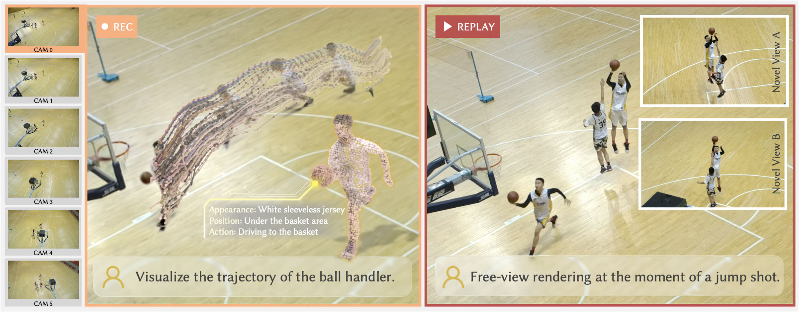
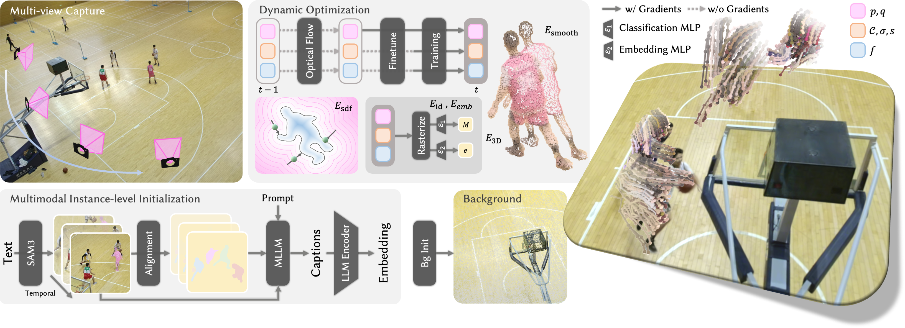
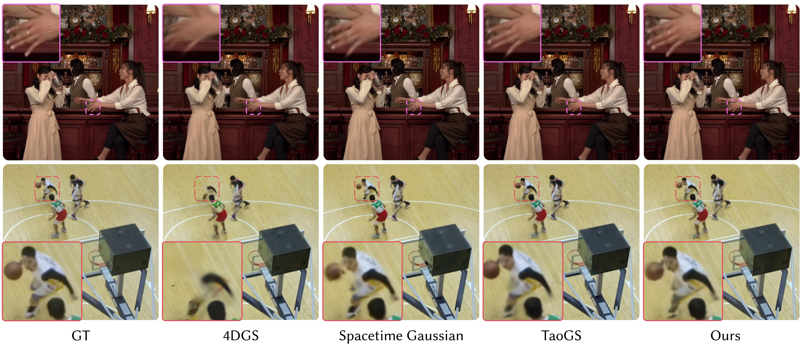
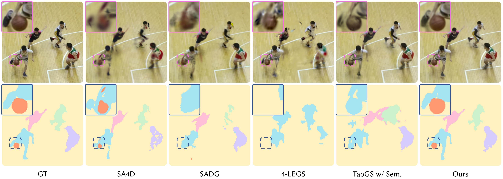
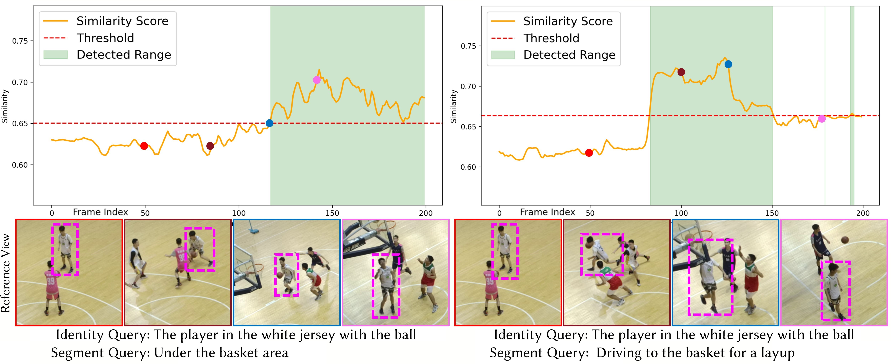
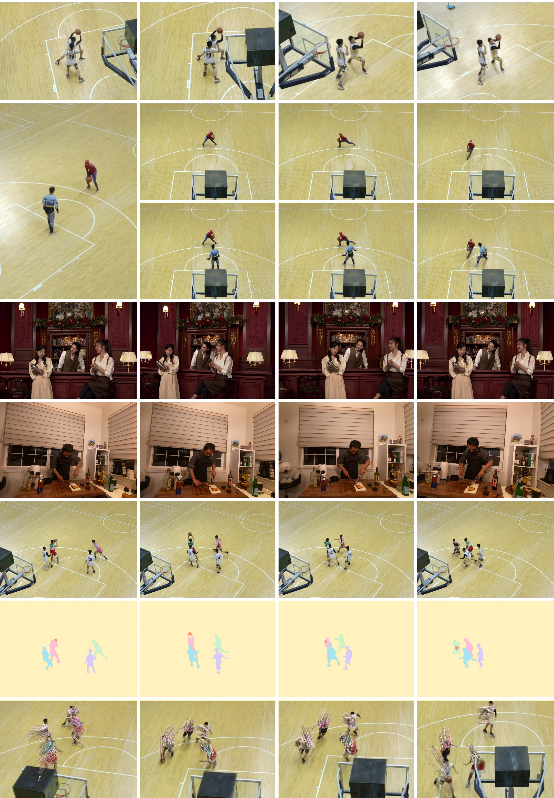

Given a dynamic sequence with complex motions and multiple interacting instances, Director can not only achieve temporally coherent 4D reconstruction and high-fidelity rendering, but also enable instance segmentation and open-vocabulary querying.
We present Director, an instance-aware spatio-temporal Gaussian representation for dynamic scene modeling and understanding, which enables robust human performance tracking, high-fidelity rendering, and instance-level understanding for open-vocabulary queries.

Pipeline

Using temporally consistent SAM3 masks and sentence embeddings, our method decomposes the scene into static background and dynamic foreground, learning language- and instance-aligned features for robust tracking, high-quality rendering, and accurate instance segmentation.
Comparison

Qualitative comparison with state-of-the-art dynamic rendering methods on novel view synthesis on MPEG GSC dataset and ST-NeRF basketball dataset.

Qualitative comparison with 4D segmentation methods on ST-NeRF basketball dataset.

Visualization of open-vocabulary querying results.
Result Gallery
